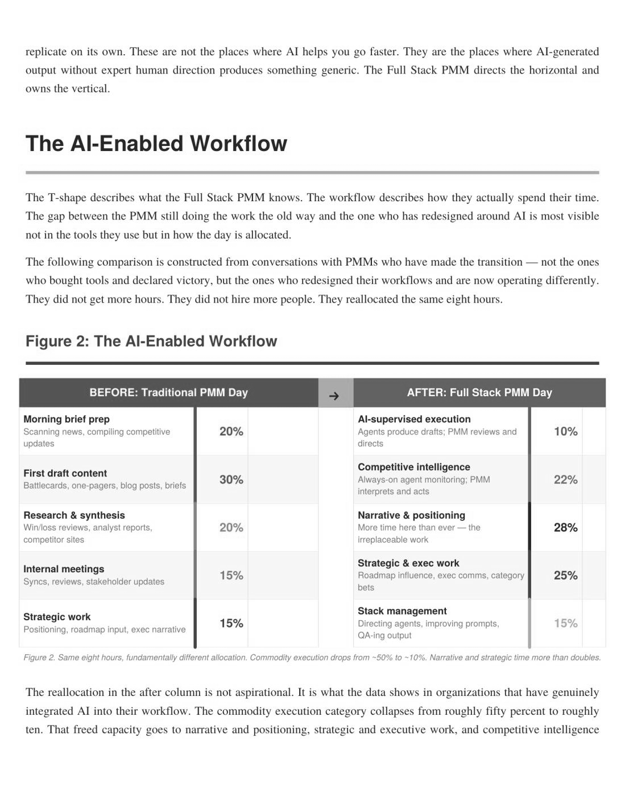
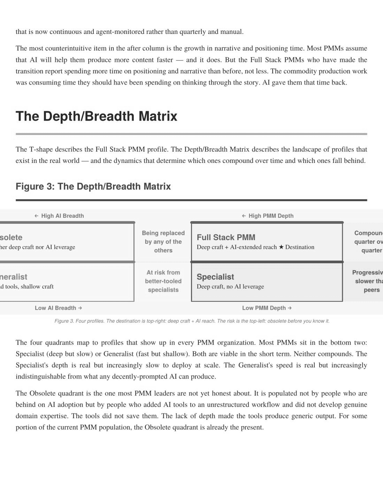
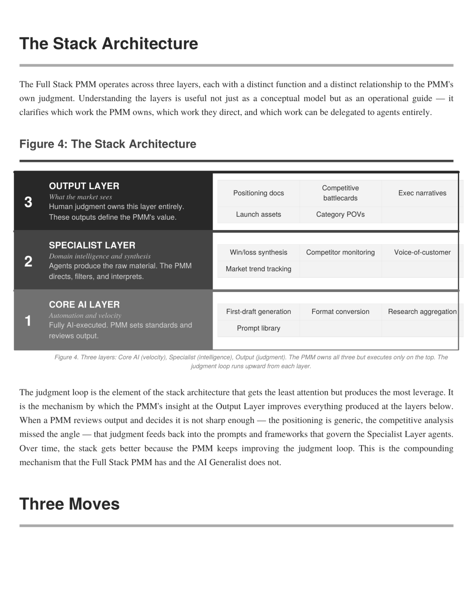
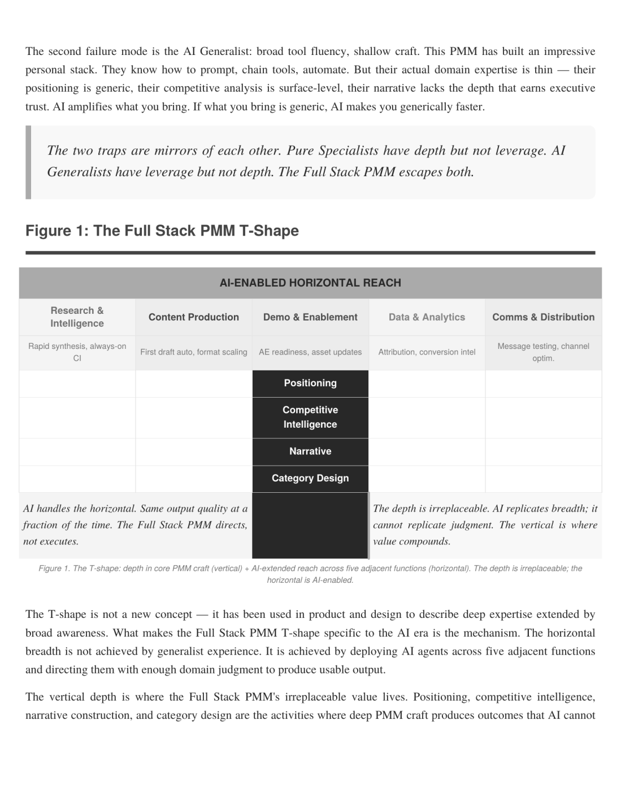

Chapter 12 Skills That Survive: What AI Can’t Touch (Yet) Pragmatic Remix: Distinctive Competence • Innovation Games • Market Problems • Buying Process
The question we get asked most often—at conferences, in DMs, over drinks at industry dinners—is some version of: “Should I be worried about my job?” The PMMs who ask it range from people two years into their career to directors with fifteen years of experience. The junior ones are worried about whether there will be a PMM role to grow into. The senior ones are worried about whether the role they’ve spent a decade mastering is about to be pulled out from under them. Both groups deserve an honest answer, so here it is: no, your job is not going away. But the version of your job you’re doing today probably is. That’s not a hedge. It’s a precise distinction. The activities that define “product marketing”—the thirty-seven boxes on the Pragmatic Framework—aren’t disappearing. Companies still need competitive intelligence, positioning, sales enablement, content, launch management, pricing strategy, and analyst relations. They need them more than ever, actually, because the agentic era is making go-to-market more complex, not less. What’s disappearing is the specific way those activities have been performed: manually, sequentially, at human speed, with human bottlenecks at every step. The PMM of 2023 spent the majority of their time on execution—producing deliverables. The PMM of 2028 will spend the majority of their time on judgment— making decisions that agents can’t make. The deliverables still get produced. They just get produced differently, at different speed, and the human’s contribution shifts from drafting to directing. So the real question isn’t “Will I have a job?” It’s “Which skills do I need to develop so that the version of me that shows up in 2028 is more valuable, not less?” That’s what this chapter is about.
The Four Surviving Skills When we did the Pragmatic Framework analysis in Chapter 2, the activities that scored highest on elevation opportunity—the ones that become more valuable as the routine work around them is automated—clustered around four capabilities. These aren’t job titles or Pragmatic boxes. They’re meta-skills that cut across multiple activities and that define what it means to be a senior, strategic product marketer in the agentic era.
Strategic Judgment Strategic judgment is the ability to make good decisions under ambiguity with incomplete information. It sounds abstract until you realize it’s the core of almost every Cluster Three activity. Which competitive move do you respond to and which do you ignore? Your CI agent flags twelve competitive signals this week. Three of them are noise. Six are worth noting but don’t require action. Two require immediate response. One requires a fundamental rethinking of your competitive narrative. The agent can’t tell you which is which. It can prioritize by recency, by signal strength, by relevance to your stated competitive priorities—but the judgment call about whether a competitor’s new partnership is a strategic threat or a desperate pivot requires understanding the competitive landscape, the competitor’s internal dynamics, your own company’s strategic position, and what the market will perceive. That’s judgment. It’s developed through experience, not training. Which pricing model do you adopt when the data is inconclusive? Your pricing research shows that 40% of customers prefer consumption-based pricing and 35% prefer perseat. The remaining 25% say it depends on the use case. There is no clear winner. An agent can present the data. It can model scenarios. It can show you what competitors are doing. But the decision to go with consumption pricing for your enterprise tier and per-seat for your SMB tier, with a conversion path between them—that’s a strategic judgment that synthesizes market data, competitive positioning, sales team capabilities, and financial model constraints into a single coherent choice.
Strategic judgment is hard to develop deliberately because it’s mostly developed through exposure to decisions and their consequences. But there are some accelerants: postmortems on every major decision (not just the ones that went wrong), exposure to decision-making in other functions (sit in on product roadmap reviews, pricing committee meetings, sales pipeline reviews), and the habit of writing down your reasoning before you see the outcome so you can evaluate your judgment calibration over time.
Organizational Intelligence We mentioned in Chapter 2 that getting twelve people to agree on a positioning document is harder than writing it. That’s organizational intelligence—the ability to navigate stakeholders, build cross-functional alignment, manage up and across, and understand the informal power structures that determine what actually gets done. This is the skill that AI is furthest from replicating, and we think it’s the one that separates good PMMs from great ones. A good PMM can write excellent positioning. A great PMM can get that positioning adopted by product, endorsed by sales, supported by leadership, and reflected in every customer-facing touchpoint. The writing is maybe 20% of the effort. The organizational navigation—the meetings, the compromises, the one-on-one conversations where you understand what someone really objects to (which is usually not what they say they object to), the political awareness of when to push and when to wait—is the other 80%.
We’ll give you a specific example because abstract advice about “navigating stakeholders” is useless without context. Early in our time at SAP, we were working on positioning for a product that sat at the intersection of two business units. Each business unit had a VP who wanted the positioning to emphasize their product’s contribution. The positioning document went through seven drafts—not because the writing was
wrong but because each draft surfaced a new political objection that was really about organizational territory, not about messaging. We solved it by having coffee with each VP separately, not to discuss the positioning but to understand what they needed the positioning to accomplish for their team. One VP needed the positioning to support a headcount request. The other needed it to justify a product investment to the board. Once we understood what each person actually needed—as opposed to what they said they wanted in the positioning document—we could write a version that served both agendas without compromising the market-facing clarity. No agent is going to have that coffee. No agent is going to read the body language that tells you the real objection isn’t about the word choice on slide seven. This skill is developed by paying attention to people—their incentives, their anxieties, their ambitions—and by building enough trust that they’ll tell you what they actually think rather than what they think you want to hear.
Narrative Craft We covered this in Chapter 6, so we’ll keep it brief here. Narrative craft isn’t the same as writing skill. Agents can write well. Narrative craft is the ability to construct an argument that moves people—that takes a complex, abstract, technical reality and turns it into a story that someone remembers the next day.
The skill has three components. First, story selection: knowing which story to tell for which audience at which moment. The Keurig chip story works in a chapter about DMP economics because it makes data collection feel personal and specific. It would be wrong in a chapter about pricing because it’s not about pricing. The ability to match stories to
arguments is a form of taste that’s developed through wide reading, careful observation, and a lot of practice. Second, specificity: the discipline of using concrete details rather than abstract claims. Named people. Named companies. Specific numbers. The exact question Douwe Bergsma asked in the conference room. The twelve-year-old sneaking Donut Shop KCups on weekends. These details are what make a story sticky, and they require having been somewhere and paid attention. Third, voice: the quality that makes your writing recognizably yours. Not performative quirks or stylistic tics, but the authentic expression of how you see the world and what you think is funny, important, and true. This is the hardest component to develop because it requires enough self-knowledge to write honestly and enough confidence to write distinctively. Most PMMs default to a corporate voice that’s competent and invisible. The ones who break through have figured out how to sound like themselves.
Customer Empathy We put customer empathy last not because it’s least important but because it’s the one most PMMs think they already have—and most of them are wrong, or at least incomplete, about what it actually requires.
Customer empathy isn’t the same as customer knowledge. An agent can give you comprehensive customer knowledge: usage patterns, support tickets, NPS scores, feature requests, churn predictors. That’s data. Customer empathy is the ability to understand what a customer feels—the frustration of trying to get budget approval for a tool that everyone agrees they need but nobody will prioritize, the anxiety of betting
their reputation on a vendor choice that could go wrong, the relief when a product actually solves the problem they were hired to solve. The PMM who has customer empathy produces different work than the PMM who has customer knowledge. The knowledge-based PMM writes positioning that maps features to requirements. The empathy-based PMM writes positioning that maps capabilities to emotions: “Stop dreading Monday’s forecast meeting” hits differently than “Improve forecast accuracy by 34%”—not because the second claim is wrong but because the first one connects with the human experience of what bad forecasting actually feels like in a planning team’s daily life. Customer empathy is developed through direct customer exposure: interviews, ridealongs, user testing sessions, support call listening, and—critically—informal conversations where you’re not asking structured research questions but just talking to a person about their job. We make it a rule to have at least two unstructured customer conversations per month, and we encourage every PMM we manage to do the same. The insights from these conversations don’t always show up in a deliverable, but they accumulate into a felt understanding of the customer that informs everything you produce.
The T-Shaped PMM The model that brings all of this together is what we think of as the T-shaped PMM. The horizontal bar of the T is broad competence across agent-augmented skills: the ability to direct agents for competitive intelligence, content production, data analysis, launch coordination, and the other Cluster One and Cluster Two activities. Every PMM needs this bar. It’s the table stakes of the agentic era—the minimum level of agent fluency required to remain competitive.
The vertical bar of the T is deep expertise in one of the four surviving skills: strategic judgment, organizational intelligence, narrative craft, or customer empathy. This is your differentiator—the skill that makes you irreplaceable rather than merely competent. The PMM with deep narrative craft and broad agent fluency is a different archetype than the
PMM with deep organizational intelligence and broad agent fluency, and both are valuable in different contexts. The career implication is clear: invest in both bars. Develop your agent fluency broadly—learn the tools, build the workflows, get comfortable directing rather than doing. And simultaneously deepen your strongest surviving skill to the point where you’re recognized for it—the person people come to for the hard strategic calls, or the person who can navigate any stakeholder minefield, or the person whose writing stops people in their feed, or the person who understands customers at a level that everyone else is just guessing at. The PMM with both bars—broad agent fluency and deep human skill—is the 10x PMM. Not because they work harder than their peers, but because they’ve figured out what to outsource to machines and what to keep for themselves. That distinction is, in a sense, the entire argument of this book.




When hiring for 10x PMMs, the most revealing interview question may be: “Tell me about a time you changed your mind about something important based on new information. What was the original position, what changed it, and what did you do differently?” The answer reveals nearly everything that matters. Whether they can be specific rather than abstract—because the best answers are stories with named people, real stakes, and concrete outcomes. Whether they have strategic judgment— because changing your mind professionally requires intellectual honesty and clarity about what “right” looks like. Whether they have organizational intelligence— because changing direction usually means convincing others too. What this question doesn’t ask about is tools, frameworks, or deliverables. Those things matter, but they’re learnable. The four skills that survive—judgment, organizational intelligence, narrative craft, and empathy—are the hard ones. They’re what separates PMMs who will thrive in the agentic era from those who will struggle. And they’re what CMOs should be hiring for.